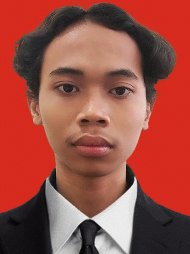

Rizki Ilhamsyah's Summary

Summary
Hi, Nama saya Rizki Ilhamsyah. Saya sekarang berumur 18 tahun. Saya lahir di Kudus, 2 Maret 2005.
Saya anak kedua dari dua bersaudara. Saya memiliki ketertarikan di dunai programming, terutama web development.
Saya belajar web development secara otodidak dan berharap saya menjadi seorang professional developer.
Cita-cita saya adalah menjadi programmer. Keingginan saya yag kuat untuk menjadi seorang developer menandakan bahwa saya adalah seorang pekerja keras.
Saya juga sangat menyukai tantangan. Saya harap saya dapat menjadi apa yang saya inginkan.
Education
- SD 2 Mlatinorowito (2010-2016)
- SMP 1 Kudus (2017-2020)
- SMA 1 Kudus (2021-2022)
- Universitas Sebelas Maret (S.T) (2022-sekarang)
Work Experience
- Sekretaris Umum (2022-2023)
- HMTE Universitas Sebelas Maret
- Programming and GCS (2022-present)
- Bengawan UV Universitas Sebelas Maret
- Kreatif PKKMB FT (2023)
- Universitas Sebelas Maret
- Sekretaris (2022)
- PONSEL (Pekan Olahraga dan Seni Elektro) UNS
- Kepala Divisi Sekretaris EL-SEMAR#11(2023)
Skills
- Machine Learning
- Web Development
- Time Management
- Administration
- People Management
Awards
- Peserta di KRTI 2023 Divisi VTOL
- Siswa Akselerasi saat SMA
My Hobby
Contact Me